Pedometer Record System — User Manual for participants and administrators
Contents
本システムは、健康対策委員会が実施している健康対策推進活動において、これまで個人ごとに Excel へ記入し、メールや FAX で提出していた万歩計の歩数記録を、Web 上で完結させるためのものです。参加者は毎日の歩数を入力して月末に提出し、健康対策委員はその結果をそのまま集計表として取り出せます。
This system replaces the personal Excel form and the email/FAX submissions previously used for the Health Promotion Committee's pedometer activity. Participants enter their daily step counts and submit once a month; the Health Promotion Committee can export the completed master spreadsheet directly.
1 か月は、暦どおりではなく 起算日 21 日から翌月 20 日まで です。たとえば「2026年 8月度」は 7月21日から 8月20日までを指します。画面上部には常にこの期間が表示されます。
A month runs from the 21st to the 20th of the following month, not the calendar month. "2026年 8月度" therefore covers 21 July to 20 August. The period is always shown at the top of the screen.
21日から翌月1日までの間に、画面下部の「提出する」ボタンを押して集計表を提出します。
Between the 21st and the 1st of the following month, press the 提出する button at the bottom of the screen to submit.
対象期間中、1日も欠かさず（土日・祝日を含む）5,000 歩以上を達成した方が完歩賞の対象となり、2,000 円が給与にて支給されます（源泉徴収の対象です）。1 日でも 5,000 歩に届かない日があると対象外となります。
Participants who reach 5,000 steps or more on every single day, weekends and public holidays included, of the period qualify for the walking bonus of 2,000 yen, paid through payroll and subject to withholding tax. Missing 5,000 on even one day disqualifies the month.
5,000 歩未満の日があっても、実績の提出は必要です。完歩賞の対象外となる場合でも、参加記録として集計いたします。
Even if you did not reach 5,000 steps, you still need to submit. Your record is counted as participation regardless of the bonus.
ブラウザでシステムの URL を開くと、ログイン画面が表示されます。社員番号を入力して「ログイン」を押してください。パスワードは必要ありません。画面右上の EN で日本語と英語を切り替えられます。
Open the system URL in your browser to reach the sign-in screen. Enter your employee number and press ログイン. No password is required. Use EN at the top right to switch between Japanese and English.
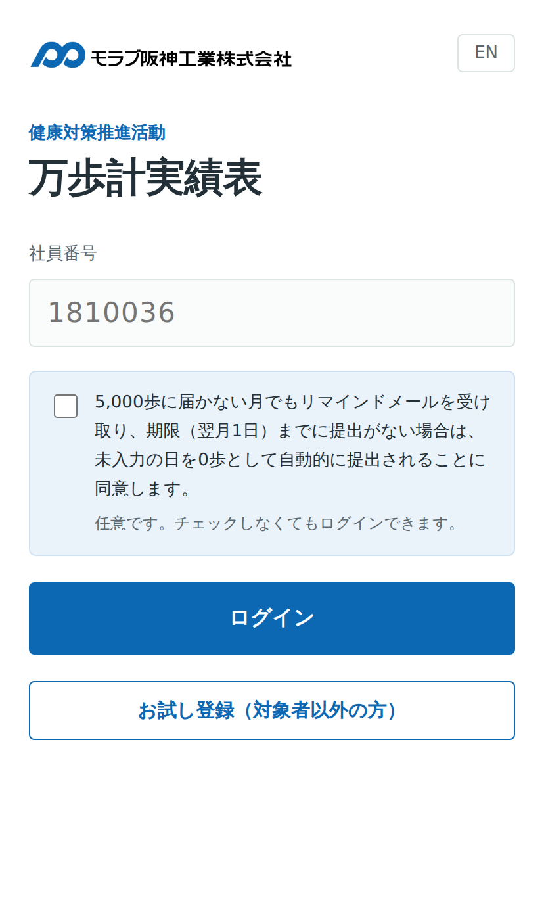
Enter your employee number.
Read the consent notice and tick it if you wish. This is optional.
Press the ログイン button.
健康対策委員会までお問い合わせください。氏名から社員番号を調べる機能は、他人の社員番号でログインできてしまうため廃止しました。
Please ask the Health Promotion Committee. The name-search box has been removed: while sign-in uses the employee number alone, it would have let anyone find and use somebody else's.
チェックすると、次の 2 つに同意したことになります。記録されるのは最初の 1 回のみで、2 回目以降のチェックは記録に影響しません。
Ticking the box means you agree to both of the following. Only your first answer is recorded; ticking it again later changes nothing.
| 内容 / What you agree to | 意味 / What it means |
|---|---|
| リマインドメールの受信 Receiving the reminder |
5,000 歩に届かない月でも、未提出の場合はリマインドメールが届きます。 You will be emailed if you have not submitted, even in a month below 5,000 steps. |
| 未提出時の自動提出 Automatic submission |
期限（翌月1日）までに提出がない場合、未入力の日を 0 歩として自動的に提出されます。 If nothing is submitted by the 1st of the following month, your record is submitted with blank days recorded as 0. |
チェックしなくてもログインできます。同意の有無をあとから変更したいときは、健康対策委員会までご連絡ください。委員が対象者の画面で変更します。ご自身の画面からは変更できません。
You can sign in either way. To change your answer later, contact the Health Promotion Committee — a committee member changes it on the participants screen. You cannot change it yourself.
現在は社員番号のみでログインします。他の方の社員番号ではログインしないでください。パスワードによる認証は今後追加される予定です。
Sign-in currently uses the employee number alone. Please do not sign in with someone else's number. Password authentication will be added later.
ログインすると、その月度の入力画面が開きます。上部に対象期間・提出状態・合計歩数、その下にカレンダーが並びます。日付をタップすると入力欄が開きます。
After signing in you land on the entry screen for the current period: the period and submission status at the top, then your totals, then the calendar. Tap any date to enter a figure.
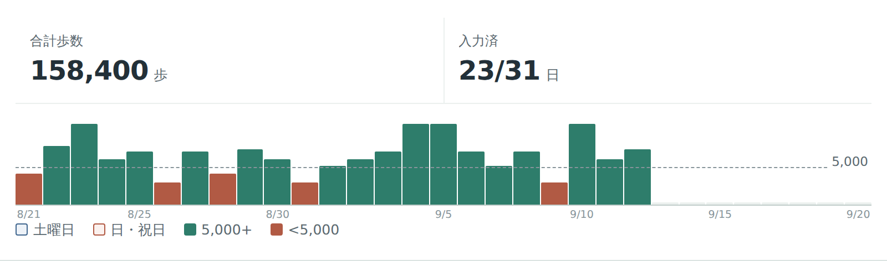
| 表示 / Item | 内容 / Meaning |
|---|---|
| 合計歩数 Total steps | 対象期間に入力した歩数の合計。 Sum of everything entered for the period. |
| 入力済 Entered | 入力済みの日数／対象期間の日数。 Days entered out of the days in the period. |
| 棒グラフ Bar chart | 1 日 1 本。点線が 5,000 歩の目安です。緑は達成、赤は未達。 One bar per day. The dashed line is 5,000. Green met it, red did not. |
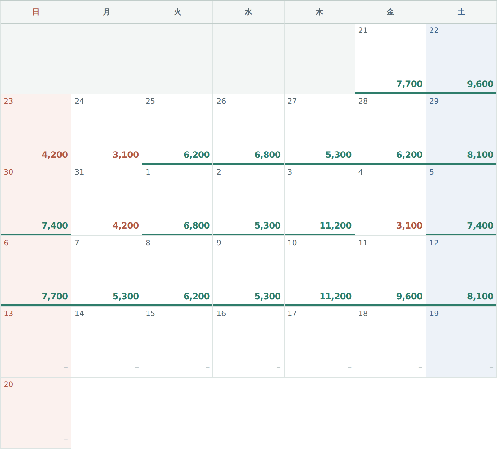
| 表示 / Appearance | 意味 / Meaning |
|---|---|
| 緑色の数字＋下線 Green figure with a rule | 5,000 歩以上歩いた日。達成した日は下辺に緑の線が入り、連続していると線がつながって見えます。 A day of 5,000 steps or more. The green rule along the bottom joins up across a streak. |
| 赤色の数字 Red figure | 5,000 歩未満。この日があると完歩賞の対象外になります。 Below 5,000. One such day disqualifies the month. |
| 灰色のハイフン（–） Grey dash | まだ入力していない日。 Not entered yet. |
| 赤色の背景 Red background | 日曜日・祝日。祝日は自動で判定されます。 Sundays and public holidays, detected automatically. |
| 青色の背景 Blue background | 土曜日。 Saturdays. |
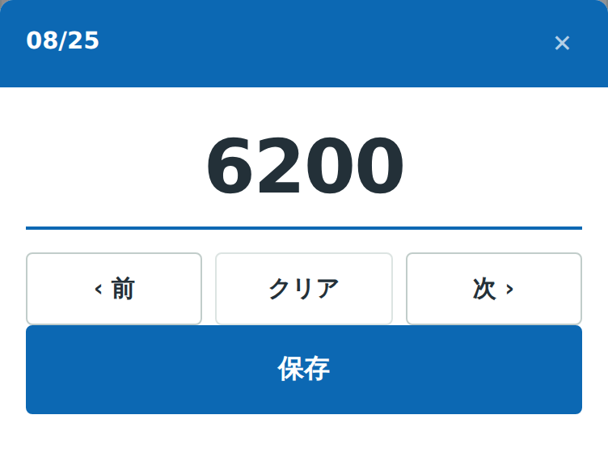
Tap the date you want to fill in.
Type the number. Enter the exact figure — do not round it.
Press 保存 to save.
Use 前 / 次 to move between days without closing the popup.
入力は自動で保存されます。「保存」ボタンを押し忘れて閉じても、画面を離れた時点の内容は残ります。提出前であれば何度でも直せます。
Entries save automatically. Nothing is lost if you close the screen, and you can correct any day as often as you like before submitting.
歩かなかった日、万歩計を着け忘れた日は、空欄のままにせず 0 と入力してください。空欄の日が残っていると提出できません。
For days you did not walk or forgot the pedometer, enter 0 rather than leaving the day blank. You cannot submit while any day is empty.
1 日あたり 100,000 歩以上は入力できません。入力ミスを防ぐためのもので、この上限は設定で変更できます。
A single day of 100,000 steps or more is refused, to catch a mistyped figure. The limit can be changed in 設定.
まとめて入力したいときは、「日別歩数」の右にある リスト を押すとリスト表示に切り替わります。紙の実績表と同じ 21 日から翌月 20 日までの並びで、上から順番に入力できます。
To fill in several days at once, press リスト to the right of 日別歩数. The list follows the same 21st-to-20th order as the paper form, so you can work straight down it.
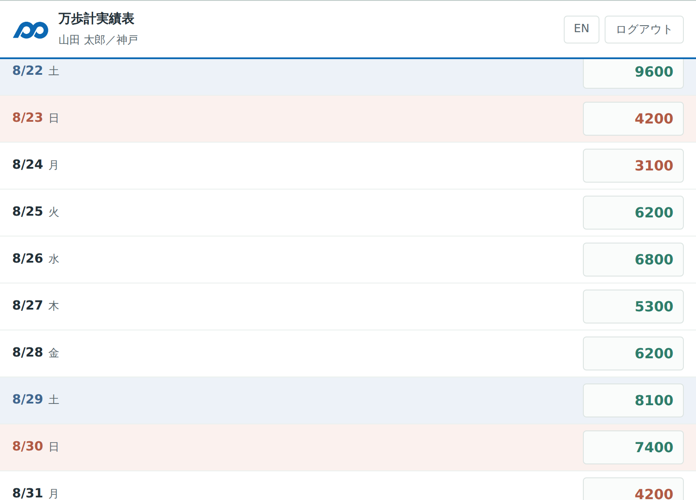
Tap a box and type. Move down the rows as you go.
On a PC, press Enter to jump to the next day's box.
Everything saves automatically.
Press カレンダー to switch back.
2月のように日数が少ない月では、存在しない日（2月30日など）は表示されません。
In shorter months the dates that do not exist — 30 February, say — are simply not shown.
対象期間のすべての日を入力し終えたら、画面下部の提出ボタンを押します。提出は 21 日から翌月 1 日まで の間に行ってください。
Once every day of the period has a figure, press the submit button at the bottom of the screen. Submission is open from the 21st until the 1st of the following month.
While days are still blank the button reads 提出する（未入力 ○日）and stays disabled.
When the month is complete the button reads 提出する. Pressing it opens a confirmation.
Check your total and bonus status, then press 提出する again.
提出後は編集できません。画面には「提出済」と表示され、入力欄は変更できなくなります。修正が必要になった場合は、健康対策委員会へご連絡ください。
You cannot edit after submitting. The screen shows 提出済 and the fields lock. If you need a correction, contact the Health Promotion Committee.
過去の月度を見たいときは、画面上部の ‹ › で月度を切り替えられます。提出済みの月も内容を確認できます。
Use ‹ › at the top of the screen to move between months. Submitted months remain viewable.
画面下部の マイページ では、その月度の達成状況と、ご自身の登録情報を確認・変更できます。
The マイページ tab at the bottom shows how the current period is going and lets you review and update your own details.
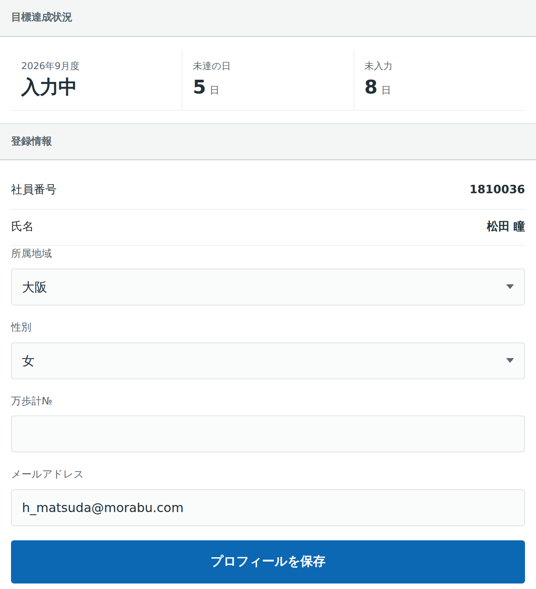
| 表示 / Item | 内容 / Meaning |
|---|---|
| 達成 Met | 全て入力済み、かつ全日 5,000 歩以上歩いている状態。 Every day entered, and every one of them 5,000 steps or more. |
| 未達成 Not met | 全て入力済み、かつ 1 日でも 5,000 歩未満の日がある状態。 Every day entered, but at least one of them below 5,000. |
| 入力中 In progress | 未入力の日が残っている状態。 Some days are still blank. |
| 未達の日 Days below | 5,000 歩に届かなかった日数。 Number of days under 5,000. |
| 未入力 Blank | まだ入力していない日数。 Days not yet entered. |
所属地域・性別・万歩計№・メールアドレスを変更できます。変更後は プロフィールを保存 を押してください。所属地域が変わった場合は、忘れずに更新をお願いします。
You can change your region, gender, pedometer number and email address. Press プロフィールを保存 to save. Please keep your region up to date if you transfer.
提出忘れを防ぐため、未提出の方には自動でメールが届きます。この章は参加者の方向けの説明です。
To prevent missed submissions, anyone outstanding receives an automatic email. This chapter is for participants.
| 日付 / Date | 起こること / What happens |
|---|---|
| 20日 20th | 対象期間の締め。 The period closes. |
| 21日〜翌月1日 21st – 1st | 提出できる期間。 Submission is open. |
| 25日 25th | 提出のお知らせ。 Notice date. |
| 26日 26th | 未提出の方へリマインドメールが届きます。最終締切（翌月1日）が記載されています。 A reminder email goes to anyone outstanding, stating the final deadline. |
| 翌月1日 1st | 最終締切。 Final deadline. |
| 翌月2日 2nd | 同意済みで未提出の方は、未入力の日を 0 歩として自動提出されます。 For consented participants still outstanding, the record is submitted with blanks as 0. |
未入力の日はすべて 0 歩として記録され、「提出済」の状態になります。何も入力していなかった場合は、全日 0 歩として提出されます。自動提出された記録は取り消せませんので、ご自身で入力・提出いただくことをおすすめします。
Blank days are recorded as 0 and the month is marked as submitted. If nothing was entered at all, the whole month is submitted as zeros. Automatically submitted records cannot be reopened, so please submit your own figures where you can.
リマインドメールは、原則として会社のメールアドレスへ送信されます。アドレスが変わった場合は、マイページで更新するか健康対策委員までご連絡ください。
Reminders are sent to your company address. If it changes, update it on My page or tell the Health Promotion Committee.
管理者としてログインすると、集計画面が開きます。ログイン画面で社員番号の代わりに kenkou@morabu.com と入力してください。画面は 集計・完歩賞・未提出・対象者・ご意見・設定 の 6 つのタブに分かれています。
Sign in with kenkou@morabu.com instead of an employee number to reach the administrator screens: six tabs — Summary, Bonus, Outstanding, Participants, Feedback and Settings.
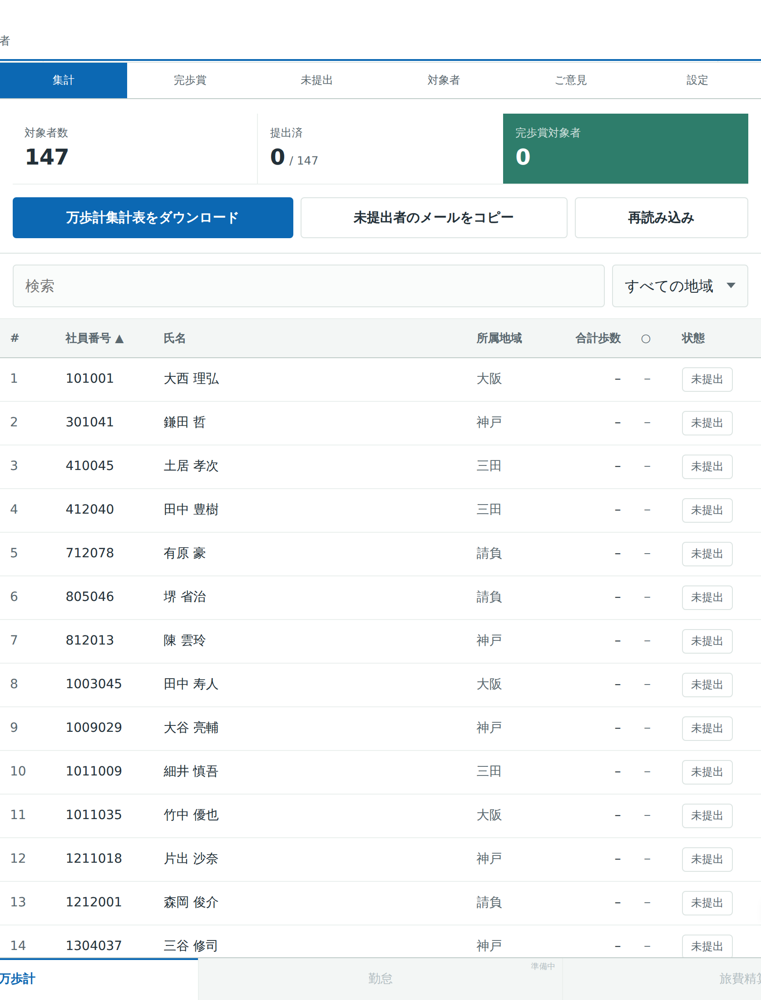
| 項目 / Item | 内容 / Meaning |
|---|---|
| 対象者数 Participants | 登録されている参加者の人数。 Number of registered participants. |
| 提出済 Submitted | その月度を提出済みの人数。 How many have submitted this period. |
| 完歩賞対象者 Bonus recipients | 全日 5,000 歩以上を達成した人数。 How many met 5,000 every day. |
Press the 社員番号 or 氏名 heading to sort ascending or descending.
Type into 検索 to filter by name or number.
Use the region dropdown to filter by area.
Click a row to see that person's daily figures.
万歩計集計表をダウンロードを押すと、現在の月度の集計表が Excel ファイルとして保存されます。ファイルには 2 つのシートが含まれます。
Press 万歩計集計表をダウンロード to save the current period as a spreadsheet containing two sheets.
| シート / Sheet | 内容 / Contents |
|---|---|
| 2608 など（月度名） Named by period | 参加者全員の日別歩数・合計・5,000歩以上の判定・メールアドレス。 Daily steps, totals, the 5,000-a-day flag and addresses for everyone. |
| 完歩賞対象者一覧 Bonus recipients | 参加人数・社員№・名前・判定（○／－）の 4 列。 Four columns: number, employee number, name and ○ / －. |
合計や判定は数式として書き出されます。従来のファイルと同じように、Excel 上で数字を直しても自動で再計算されます。
Totals and the qualification mark are written as formulas, so the file recalculates in Excel exactly like the previous one.
複数の方が同時に入力している場合は、再読み込みを押すと最新の状態になります。
Press 再読み込み to pull in entries made while you had the screen open.
完歩賞タブでは、その月度の完歩賞対象者と合計支給額を確認できます。従来の「完歩賞対象者一覧」シートと同じ内容です。
The 完歩賞 tab lists the month's bonus recipients and the total payout — the same content as the existing 完歩賞対象者一覧 sheet.
| 表示 / Item | 内容 / Meaning |
|---|---|
| 完歩賞対象者 Recipients | 対象期間中、毎日 5,000 歩以上を達成した人数。 People who met 5,000 every day of the period. |
| 合計支給額 Total payout | 対象者数 × 2,000 円。個人ごとの金額は保持しません。 Recipients × 2,000 yen. Per-person amounts are not stored. |
| 一覧の ○ / － ○ / － in the list | ○ が対象、－ が対象外です。 ○ qualified, － not qualified. |
基準歩数（5,000 歩）と支給額（2,000 円）は設定タブで変更できます。変更すると、過去の月度の判定表示にも反映されますのでご注意ください。
The 5,000-step threshold and the 2,000-yen amount can be changed in Settings. Changing them also affects how earlier months are displayed.
未提出タブでは、まだ提出していない方の一覧、自動提出への同意状況、最終締切が確認できます。
The 未提出 tab shows who has not submitted, whether they consented to automatic submission, and the final deadline.
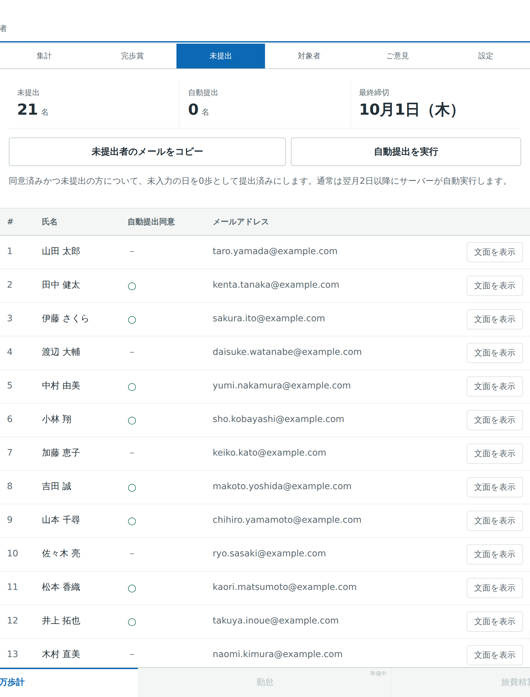
各行の 文面を表示 を押すと、その方に送られるメールの宛先・件名・本文が確認できます。日本語と英語が 1 通にまとめられ、お名前と最終締切が自動で差し込まれます。
Press 文面を表示 on any row to see the exact address, subject and body. Japanese and English are combined into one message, with the person's name and the deadline inserted automatically.
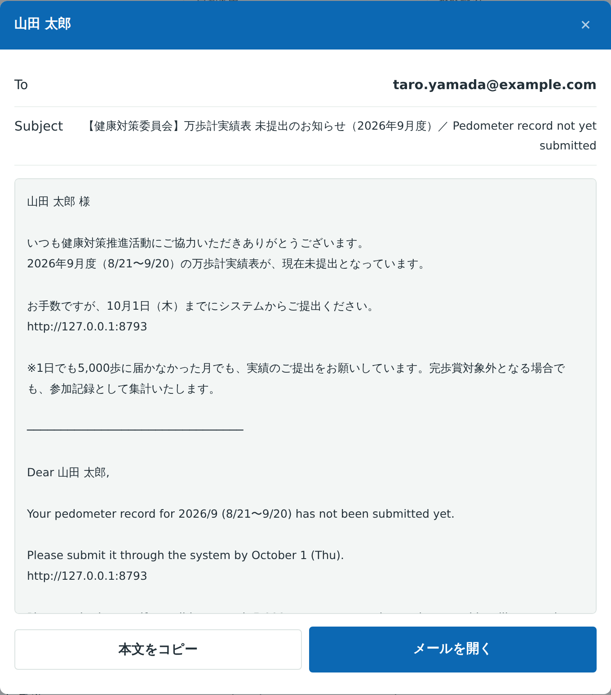
| ボタン / Button | 機能 / Function |
|---|---|
| 未提出者のメールをコピー Copy emails | 未提出者全員の会社アドレスをまとめてコピーします。 Copies the company addresses of everyone outstanding. |
| 本文をコピー Copy body | メール本文をコピーします。 Copies the message body. |
| メールを開く Open in mail | 宛先・件名・本文を入れた状態でメールソフトが開きます。 Opens your mail client with everything filled in. |
| 自動提出を実行 Run auto-submission | 同意済みかつ未提出の方を、未入力の日を 0 歩として提出済みにします。 Submits consented, outstanding records with blanks as 0. |
通常、26 日のリマインド送信と翌月 2 日の自動提出はサーバーが自動で実行します。上のボタンは、確認したいときや手動で行いたいときのためのものです。
Normally the server sends the reminders on the 26th and runs the auto-submission on the 2nd. These buttons are for checking, or for running it by hand.
自動提出された記録は取り消せません。実行前に、未提出者と同意状況をご確認ください。
Automatically submitted records cannot be reopened. Please check the list before running it.
対象者タブで、参加者の追加・編集・削除ができます。入社・退職・異動があった場合はこちらで更新してください。
Use the 対象者 tab to add, edit and remove participants as people join, leave or transfer.
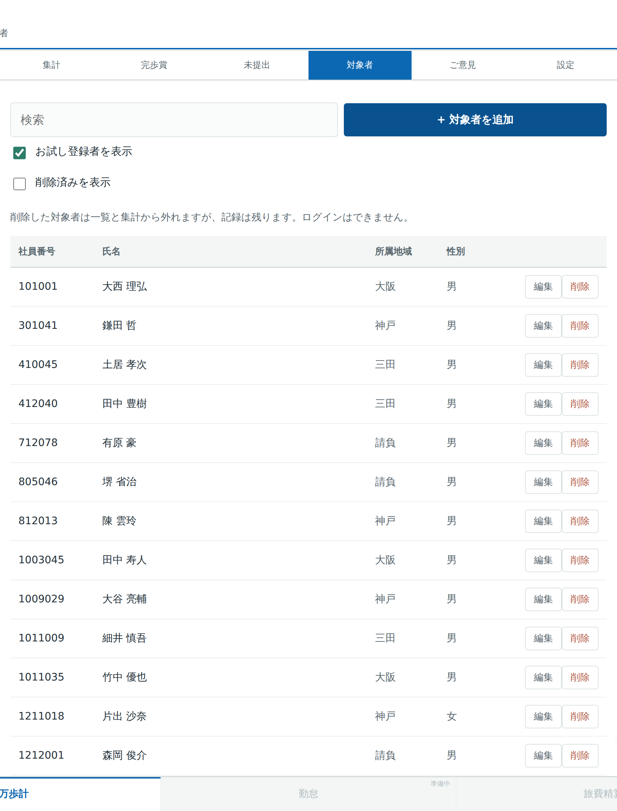
Press ＋ 対象者を追加 to register someone new.
Fill in the number, name, region, gender, pedometer number and email, then save.
編集 changes an existing participant.
削除 removes a participant from the list.
削除しても記録は消えません。一覧と集計から外れ、ご本人はログインできなくなりますが、入力済みの歩数はそのまま残ります。削除済みを表示にチェックを入れると削除した参加者が一覧に表示され、復元で元に戻せます。
Removing a participant does not delete anything. They drop out of the list and the totals and can no longer sign in, but their entered steps are kept. Tick 削除済みを表示 to see removed participants, and press 復元 to bring one back.
社員番号はログイン ID を兼ねています。重複した社員番号は登録できません。
The employee number is also the sign-in ID, so duplicates are rejected.
同じ画面の下部で、所属地域の選択肢を追加・削除できます。現在は 神戸／東京／大阪／京都／三田／姫路／請負／その他 の順で登録されています。
Below the list you can add or remove the region choices. They are currently ordered Kobe, Tokyo, Osaka, Kyoto, Sanda, Himeji, contractors (請負) and Other.
設定タブでは、集計ルールと出力形式を変更できます。数値と ID の欄は入力しただけでは反映されません。設定を保存を押してください。押すとすぐに全員の画面へ反映されます。
The 設定 tab holds the aggregation rules and the export format. The number and ID fields are not applied as you type — press 設定を保存. Saving takes effect for everyone immediately.
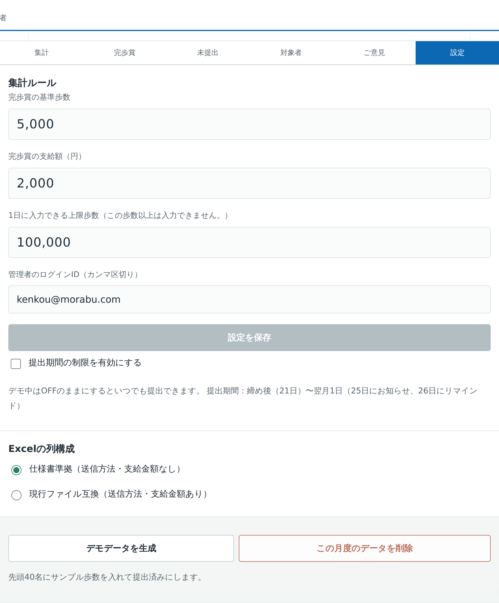
| 設定 / Setting | 内容 / What it does |
|---|---|
| 完歩賞の基準歩数 Bonus threshold | 初期値 5,000 歩。判定と色分けの基準になります。 Default 5,000. Drives both the qualification test and the colour coding. |
| 完歩賞の支給額 Bonus amount | 初期値 2,000 円。合計支給額の計算に使われます。 Default 2,000 yen, used for the total payout. |
| 1日に入力できる上限歩数 Maximum steps per day | 初期値 100,000 歩。これ以上の歩数は入力できません。 Default 100,000. A day at or above this figure is refused. |
| 管理者のログインID Administrator IDs | 管理者としてログインできる ID。カンマ区切りで複数指定できます。空にはできません。 Which IDs can sign in as administrator. Comma separated, and it cannot be left empty. |
| 提出期間の制限 Enforce the window | ON にすると、提出期間外は提出できなくなります。 When on, submission is blocked outside the window. |
| Excel の列構成 Excel layout | 「仕様書準拠」は送信方法・支給金額の列なし、「現行ファイル互換」は従来どおり両方の列を含みます。 仕様書準拠 omits the submission-method and payout columns; 現行ファイル互換 keeps both. |
管理者のログインIDを変更すると、それまでの ID ではログインできなくなります。保存する前に綴りをご確認ください。誤って保存すると、どなたも管理画面に入れなくなります。
Changing the administrator ID stops the previous one working. Check the spelling before saving — a typo locks everyone out of the administrator screens.
設定画面の下部にある デモデータを生成 と この月度のデータを削除 は、動作確認用の機能です。運用開始後は使用しないでください。実際の入力データが失われます。
The デモデータを生成 and この月度のデータを削除 buttons at the bottom are for testing only. Do not use them once the system is live — real entries will be lost.
| 日付 / Date | 参加者 / Participant | 健康対策委員 / Committee |
|---|---|---|
| 21日〜20日 | 毎日の歩数を入力 Enter steps daily | ― |
| 21日〜翌月1日 | 実績表を提出する Submit the record | 集計画面で状況を確認 Watch progress |
| 25日 | ― | 提出のお知らせ Notice |
| 26日 | リマインドメールを受信 Reminder arrives | 送信結果のサマリーを受信 Receive the send summary |
| 翌月2日 | 同意者は実績表の自動提出 Auto-submission of the record | Excel を出力し実績表の確認。確認後、要経費申請書の作成 Export, check the records, then raise the expense request |
| 質問 / Question | 回答 / Answer |
|---|---|
| 提出したあとに間違いに気づきました。 I found a mistake after submitting. |
ご自身では修正できません。健康対策委員会へご連絡ください。管理者が提出を取り消すと、再び入力できるようになります。 You cannot edit it yourself. Contact the committee; an administrator can reopen it. (Automatically submitted records are the exception and cannot be reopened.) |
| 万歩計を着け忘れた日はどうすればよいですか。 What if I forgot the pedometer? |
0 と入力してください。空欄のままでは提出できません。 Enter 0. You cannot submit with blank days. |
| 5,000 歩に届かない日がありました。提出は必要ですか。 I missed 5,000 on some days — do I still submit? |
必要です。完歩賞対象外でも、参加記録として集計します。 Yes. The record is counted as participation even without the bonus. |
| スマートフォンでも使えますか。 Does it work on a phone? |
使用できます。ブラウザで URL を開いてください。ホーム画面に追加しておくと便利です。 Yes — just open the URL in your browser. Adding it to your home screen makes it quicker. |
| 祝日はどのように扱われますか。 How are public holidays handled? |
日本の祝日情報を自動で取得し、カレンダーに色分け表示します。祝日も歩数の入力対象です。 Japanese holidays are detected automatically and tinted in the calendar. They still need a figure. |
| 異動して所属地域が変わりました。 My region changed. |
マイページの「所属地域」で変更し、保存してください。 Change it on My page and save. |